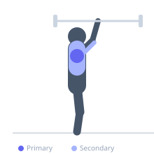

Exercise guide / Barbell Overhead Press
Barbell Overhead Press
The barbell overhead press is a standing vertical pushing exercise in which a barbell is pressed from the front rack position to full overhead extension. It is the primary free-weight exercise for developing shoulder mass and pressing strength, and also trains the triceps and upper trapezius as significant synergists.
Primary muscles
deltoid anterior
deltoid lateral
Secondary muscles
triceps long head
triceps lateral head
trapezius upper
Stabilizers
supraspinatus
infraspinatus
transverse abdominis
Equipment
Standard Barbell
Optional
Power Rack (Squat Cage)


Starting position
- Stand with feet hip-width apart. Hold the barbell in a front rack position at the upper chest with hands slightly wider than shoulder width. Elbows just in front of the bar, wrists straight.
Setup
- Unrack the barbell from a squat rack set at upper chest height. Brace the core and squeeze the glutes before pressing to stabilize the spine.
Steps
- Take a breath and brace the core hard.
- Press the bar straight up and slightly back as it passes the face, sliding the head back slightly to allow bar clearance.
- Lock the bar out directly overhead with arms fully extended and biceps close to the ears.
- Lower the bar under control back to the front rack position.
Coaching cues
- Press your head through your arms as the bar passes your face
- Squeeze your glutes and abs hard — make your whole body a rigid pillar
Breathing
- Inhale and brace before each press. Exhale at lockout.
Range of motion
- Full lockout overhead, bar returns to clavicle/upper chest level at the bottom.
Tempo
- 2-0-1-0
Common mistakes
- Pressing the bar forward instead of straight up and over the center of mass
- Excessive lumbar hyperextension — maintain a braced, neutral lumbar curve
- Not locking the bar out overhead fully
Safety
- If shoulder mobility limits an overhead lockout, work on thoracic extension and shoulder flexibility
- Use a squat rack to unrack safely — do not clean from the floor for pressing sets
Training
- strength: 1–5 reps
- hypertrophy: 6–12 reps
- endurance: 12–20 reps
- strength: 3–6 sets
- hypertrophy: 3–5 sets
- endurance: 2–4 sets
- Rest: {'strength': 180, 'hypertrophy': 90, 'endurance': 60}